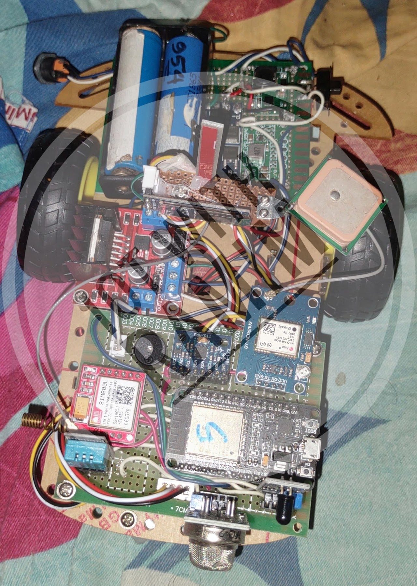
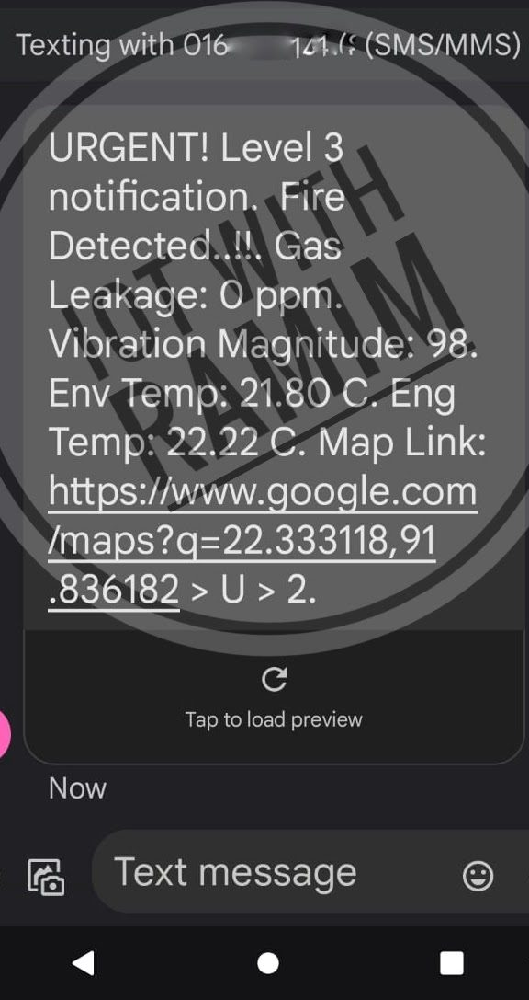
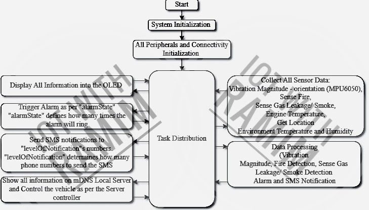
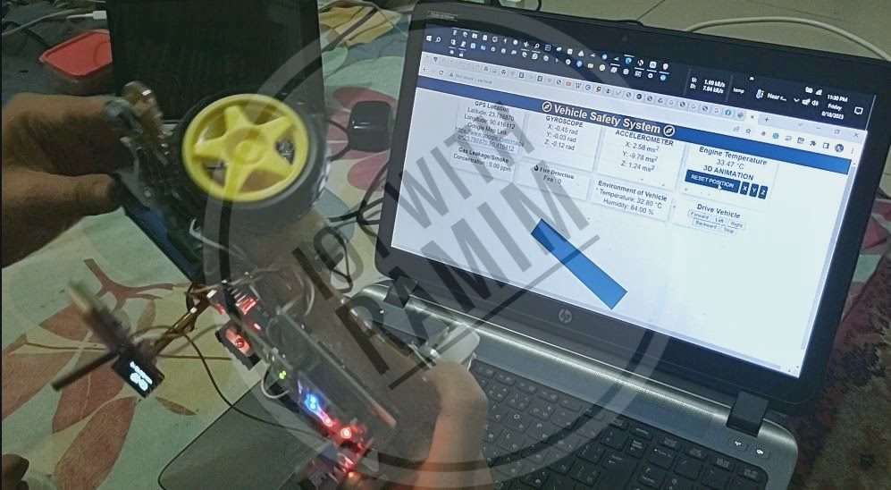

Health & Safety
Multi-Sensor Vehicle Safety & Emergency Response
A real-time vehicle monitoring system that detects accidents, fires, fuel leakages and critical temperature variations, then automatically alerts the right people and emergency services by SMS with the vehicle's GPS location.
- Type
- Vehicle safety & emergency response
- Platform
- ESP32 with SIM800L GSM and NEO-6M GPS
- Power
- Dual 18650 cells, 2S BMS
- ESP32
- MPU-6050
- MQ-2 gas sensor
- Flame sensor
- DHT11
- NEO-6M GPS
- SIM800L GSM
- SSD1306 OLED
- 18650 2S BMS
- mDNS web server
Overview
The system brings several hazard sensors, GPS tracking and GSM communication together in one ESP32-based unit. It watches the vehicle continuously and, depending on how serious an incident is, notifies the driver, traffic control, the fire service and an ambulance, with the location ready to open in Google Maps.




System architecture
Hardware
| Function | Component |
|---|---|
| Core processing | ESP32 microcontroller |
| Accident detection | MPU-6050 6-axis motion-tracking sensor |
| Gas leakage | MQ-2 gas / air-quality sensor |
| Fire | Flame sensor |
| Environment | DHT11 temperature and humidity sensor |
| Location | NEO-6M GPS module |
| Communication | SIM800L GSM/GPRS module for emergency SMS |
| Display | SSD1306 OLED, 128×32, I2C |
| Power | Two 18650 cells with a 2S BMS; 8.4 V to 5 V 3 A buck converter; TP5100-based charger (12 V to 8.4 V) |
Software: task flow
The firmware is organised as a hierarchy of tasks:
- System and peripheral initialisation
- Continuous multi-sensor data collection
- Real-time data processing and analysis
- Dynamic alert generation
- Multi-channel notification dispatch
- Data synchronisation with a local server
Four-level alert system
Alerts escalate with the severity of the incident:
| Level | Who is notified |
|---|---|
| 1 | Personal notification |
| 2 | Personal + traffic control |
| 3 | Personal + traffic control + fire service |
| 4 | Full emergency response: all services + ambulance |
Key features
Accident detection
Vibration magnitude is monitored in real time. Crossing a threshold triggers an automatic alert to emergency services with the GPS location.
- >850vibration magnitude: basic accident alert
- >1000vibration magnitude: severe accident alert
- 4escalating alert levels
Monitoring and notification
- Gas leakage: continuous detection with the MQ-2 sensor.
- Fire: flame detection with an immediate emergency response.
- Temperature and humidity: continuous monitoring with real-time data logging.
- SMS alerts with location: GSM messages carry GPS data formatted for Google Maps, sent at the alert level that matches the incident.
- Remote monitoring: a local web server reachable over mDNS provides real-time data visualisation, system status and remote vehicle control.
Impact
- Automated alerts reduce emergency response time.
- Monitoring several parameters at once improves overall vehicle safety.
- Sensor fusion improves accident-detection accuracy.
- Real-time tracking and monitoring of the vehicle.
Future enhancements
- AI-based accident prediction
- Cloud integration for data analytics
- A mobile app for remote monitoring
- Improved power management
- Integration with smart-city infrastructure